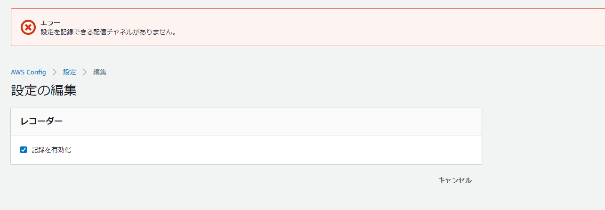

AWS Config設定時の「設定を記録できる配信チャネルがありません。」を解消する
問題
AWS Configで記録を有効化しようとすると「設定を記録できる配信チャネルがありません。」が出力されて有効化出来ないケース

下記のように、配信チャネルが無い状態になっていると思われるので、配信チャネルを手動作成する。DeliveryChannelsが確かにnullになっている。
[ec2-user@bastin ~]$ aws configservice describe-delivery-channels
{
"DeliveryChannels": []
}
[ec2-user@bastin ~]$ aws configservice describe-configuration-recorders
{
"ConfigurationRecorders": [
{
"name": "default",
"roleARN": "arn:aws:iam::xxxxxx:role/aws-service-role/config.amazonaws.com/AWSServiceRoleForConfig",
"recordingGroup": {
"allSupported": true,
"includeGlobalResourceTypes": true,
"resourceTypes": []
}
}
]
}
解決方法：配信チャネルの作成
配信チャネル作成後にConfigの再設定を行う
[ec2-user@bastin ~]$ aws configservice put-delivery-channel --delivery-channel name=default,s3BucketName=config-bucket-xxxxxxxxxx --region ap-northeast-1
参考
設定確認
[ec2-user@bastin ~]$ aws configservice describe-delivery-channels
{
"DeliveryChannels": [
{
"name": "default",
"s3BucketName": "config-bucket-xxxxx"
}
]
}
[ec2-user@bastin ~]$ aws configservice describe-configuration-recorders
{
"ConfigurationRecorders": [
{
"name": "default",
"roleARN": "arn:aws:iam::xxxx:role/aws-service-role/config.amazonaws.com/AWSServiceRoleForConfig",
"recordingGroup": {
"allSupported": true,
"includeGlobalResourceTypes": true,
"resourceTypes": []
}
}
]
}
関連しているかもしれない記事
- EMR Sparkのメモリ関連のパラメータ設定
- RedshiftのPython UDFの同時実行数
- RedshiftのLambda UDFの設定
- EMRからS3にアップロードする
- AWSのグローバルリソースのデータの保存場所について